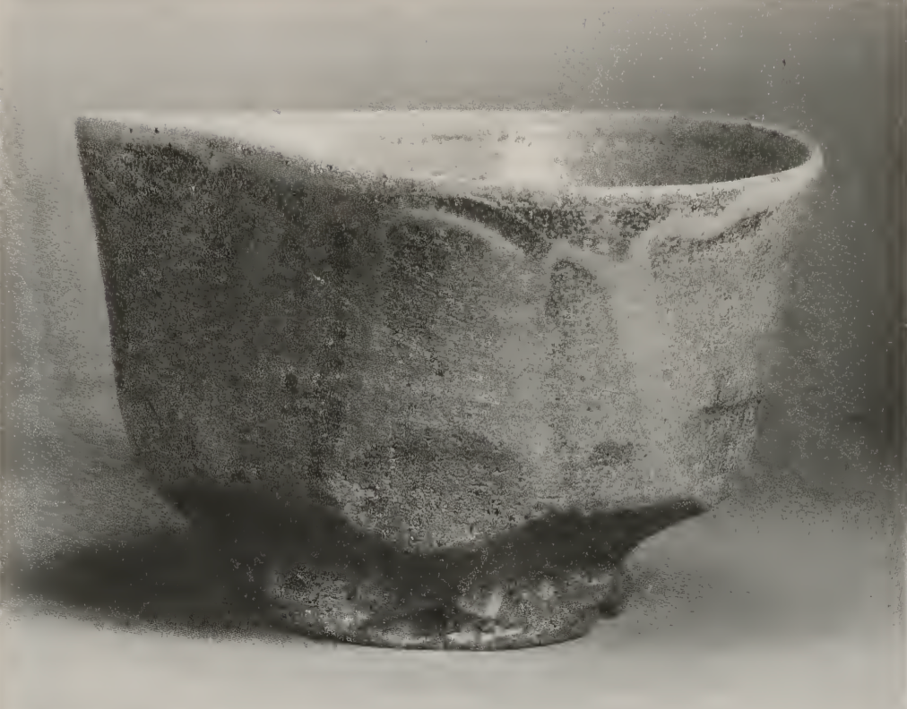

Beginning ZEN
Why Zen?
"If I were to tell you that your life is already perfect, whole, and complete just as it is, you would think I was crazy. Nobody believes his or her life is perfect. And yet there is something within each of us that basically knows we are boundless, limitless. We are caught in the contradiction of finding life a rather perplexing puzzle which causes us a lot of misery, and at the same time being dimly aware of the boundless, limitless nature of life." - Charlotte Joko Beck, Everyday Zen
People are drawn to Zen for a number of reasons. Generally, it is because they are suffering in one way or another and seek relief. Some people come because they are trying to cope with sudden grief or loss. Some people want to deal with anger that overwhelms them and harms relationships, so they want to learn to be less reactive. Often, people come to Zen who are disillusioned with a spiritual tradition in which they were raised and are looking for something else.
People sometimes come to Zen feeling that life could and should make sense, but doesn't, or could and should be meaningful, but isn't.
There is often a deeper draw as well that can be hard to express: A sense that ordinary life contains something profound that can't be grasped or put into words. Many people also possess a deep curiosity about life from a philosophical or scientific perspective. Somehow, contemplative practices like Zen help us explore questions about existence or our place in the universe, as well as better understand ourselves, and what it is to be a human being with all that entails.
When people have grown tired of trying to run away from their own life, Zen is waiting.
Below is some guidance to help you start the journey. There are so many resources online, and people can explore internet Zen-land and internet Dharma-land for as long as they have an internet connection and the will to do so.
Here are some pared-down beginnings.
Great books to get you started
Ordinary Wonder, Charlotte Joko Beck and edited by Brenda Beck Hess (or any of Joko's books)Zen Mind, Beginner's Mind, Shunryu Suzuki
No Self, No Problem: Awakening to Our True Nature, Anam Thubten
Opening the hand of thought, Kosho Uchiyama
Everything is the Way, Elihu Genmyo Smith
These books reward slow reading and contemplation of each page, ideally in conjunction with a sitting practice. Just one book, given due attention, goes a long way. There are so many great books available so start where you feel drawn.
Starting a meditation practice
It is possible to try meditation out for yourself by following some simple instructions.Being physically comfortable in a quiet place is a good start. It is not always easy or comfortable to sit on a meditation cushion. The large flat cushion, square or slightly rectangular, which forms a base for practise in Zen, is called a zabuton and the smaller round cushion is called a zafu. These are fine, but if you haven't used them before or have no experience with yoga or something similar, it is a good idea to work up to longer periods using these. Another option is a kneeing meditation bench, which many people find helpful.
Generally one can start at home most easily on a chair. We start with shorter periods to get used to the practice, which includes getting used to the physical aspects of sitting upright but relaxed, and keeping relatively still while meditating. This means noticing if we are fidgeting, taking a few slow breaths, and seeing if we can relax and calm our mind and body.
However, if we are experiencing physical pain or discomfort, it is important that we move and adjust our position. We can try shifting a little and relaxing tense muscles. Please don't engage in heroic acts of sitting that will harm your body.
If you reach a point of wanting to sit for more than about 20 minutes it is worth getting some assistance with your sitting posture. It is good to talk to a meditation teacher, a yoga teacher, a physio, an occupational therapist, or similar. It's great if you can adopt healthy sitting habits early on.
If you find you can't get comfortable, or if you are experiencing health problems, have pain from old or new injuries, a bad back, or experience chronic pain or fatigue, then please go ahead and do what you need to do to make yourself comfortable. You could use a comfortable sofa, or lie down, or some people prefer standing or slow walking. These are all absolutely fine.
In zen we typically intermingle sitting periods with walking periods. This is usually slow, contemplative, walking, but often with faster periods as well. This helps to keep our bodies well and avoids injuries from sitting in one position for too long. Faster walking reinvigorates us and is helpful when we get sleepy. At some zendos they do periods of extremely fast walking that is close to running. For us at home, when we want to sit for 45 min, we can try 20 min sit, 5 min walk, 20 min sit.
If you start with 5 minute sitting, do not think it is not worthwhile. It is ok to do this and work up from there. To start off, it is helpful to use your breath as an anchor. This will be a place of homecoming in your practice, throughout your practice life. The approach is to notice your breathing, to hold your attention there, and once the mind goes for a wander, and eventually returns, again bring attention to your breathing. This simple practice is incredibly powerful.
Many people find using breath counting helpful, especially when they find they can't settle. In this practice, at the end of each outbreath, we count. We count 1 after the first exhale, 2 after the second exhale, etc, and when we realise our mind has wandered and we have lost count, we go back to 1 and start again. If we make it to 10 (it takes practice to make it this far!), then we go back to 1 and start again.
Breath practice is a useful doorway into zazen, "just sitting". This is an undirected practice which takes some getting used to. The point is that we are physically doing this enormously simple thing, sitting stably and fairly still in one place and hopefully with somewhat composed attention, and yet a great deal can happen. All of it is what your mind is doing.
This is great, it is impossible to deny that the drama of meditation comes from our own mind. It is both empowering and terrifying to realise that there's really no-one to blame and to recognise the habits of our own mind. When we begin to see this, the process of practice can begin in earnest.

Zen and the Fine Arts, Shin'ichi Hisamatsu.